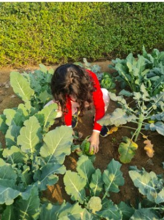

A Guide to Organic Farming - Form
Home
Forms
Guide
About Me
“With wrong farming methods, we turn fertile land into desert. Unless we go back to organic farming and save the soil, there is no future.” - Jaggi Vasudev
